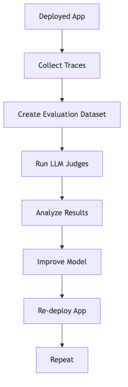

Tutorial: Evaluate and improve a GenAI application¶
This guide walks through evaluating and improving a generative AI application using MLflow and Databricks. The focus is on an email generation app using Retrieval-Augmented Generation (RAG), but the methodology applies broadly to GenAI systems.
Prerequisites¶
Before starting, ensure:
- Required packages are installed:
- An MLflow experiment is created (use the default notebook experiment if using Databricks notebooks).
CREATE TABLEpermissions on a Unity Catalog schema for evaluation datasets.
For more details, see Building MLflow Evaluation Datasets.
Step 1: Create your application¶
The first step is to build the email generation app with retrieval components instrumented for evaluation.
Initialize the LLM Client¶
Choose between Databricks-hosted or OpenAI-hosted models:
# Databricks-hosted LLMs
import mlflow
from databricks_openai import DatabricksOpenAI
mlflow.openai.autolog()
mlflow.set_tracking_uri("databricks")
mlflow.set_experiment("/Shared/docs-demo")
client = DatabricksOpenAI()
model_name = "databricks-claude-sonnet-4"
# OpenAI-hosted LLMs
import os
import openai
os.environ["OPENAI_API_KEY"] = "<YOUR_API_KEY>"
mlflow.openai.autolog()
mlflow.set_tracking_uri("databricks")
mlflow.set_experiment("/Shared/docs-demo")
client = openai.OpenAI()
model_name = "gpt-4o-mini"
Build the Email Generation App¶
from mlflow.entities import Document
from typing import List, Dict
CRM_DATA = {
"Acme Corp": {
"contact_name": "Alice Chen",
"recent_meeting": "Product demo on Monday, very interested in enterprise features...",
"support_tickets": ["Ticket #123: API latency issue (resolved last week)", ...],
"account_manager": "Sarah Johnson"
},
# Additional customer data...
}
@mlflow.trace(span_type="RETRIEVER")
def retrieve_customer_info(customer_name: str) -> List[Document]:
"""Retrieve customer information from CRM database"""
if customer_name in CRM_DATA:
data = CRM_DATA[customer_name]
return [
Document(
id=f"{customer_name}_meeting",
page_content=f"Recent meeting: {data['recent_meeting']}",
metadata={"type": "meeting_notes"}
),
# Additional documents...
]
return []
@mlflow.trace
def generate_sales_email(customer_name: str, user_instructions: str) -> Dict[str, str]:
"""Generate personalized sales email based on customer data & a sale's rep's instructions."""
customer_docs = retrieve_customer_info(customer_name)
context = "\n".join([doc.page_content for doc in customer_docs])
prompt = f"""You are a sales representative. Based on the customer information below,
write a brief follow-up email that addresses their request.
Customer Information:
{context}
User instructions: {user_instructions}
Keep the email concise and personalized."""
response = client.chat.completions.create(
model=model_name,
messages=[
{"role": "system", "content": "You are a helpful sales assistant."},
{"role": "user", "content": prompt}
]
)
return {"email": response.choices[0].message.content}
Step 2: Create Evaluation Datasets¶
Use production traces or synthetic data to build evaluation datasets:
import mlflow
import mlflow.genai.datasets
from databricks.connect import DatabricksSession
spark = DatabricksSession.builder.remote(serverless=True).getOrCreate()
uc_schema = "workspace.default"
evaluation_dataset_table_name = "email_generation_eval"
# Create dataset
eval_dataset = mlflow.genai.datasets.create_dataset(
name=f"{uc_schema}.{evaluation_dataset_table_name}",
)
print(f"Created evaluation dataset: {uc_schema}.{evaluation_dataset_table_name}")
# Add traces to dataset
traces = mlflow.search_traces(
filter_string="attributes.status = 'OK'",
max_results=10
)
eval_dataset = eval_dataset.merge_records(traces)
print(f"Added {len(traces)} records to evaluation dataset")
For more details on dataset creation, see Building MLflow Evaluation Datasets.
Step 3: Evaluate Quality with LLM Judges¶
Use MLflow's LLM judges to evaluate outputs:
from mlflow.genai import evaluate
# Define evaluation criteria
criteria = {
"relevance": "Does the email address the customer's needs?",
"personalization": "Is the email tailored to the customer's context?",
"professionalism": "Is the tone appropriate for a sales email?"
}
# Run evaluation
results = evaluate(
dataset=eval_dataset,
model_name=model_name,
criteria=criteria,
judge_type="llm"
)
Step 4: Interpret Results and Identify Issues¶
Use error analysis to find patterns:
# Find low-quality traces
low_quality_traces = mlflow.search_traces(
filter_string="tag.quality_score < 0.7",
max_results=100
)
# Analyze correlation with token usage
correlation = low_quality_traces["span.attributes.usage.total_tokens"].corr(
low_quality_traces["tag.quality_score"]
)
print(f"Correlation between token usage and quality: {correlation}")
Step 5: Improve the Application¶
Iterate on the model based on evaluation feedback:
- Refine prompts to address common failures
- Improve retrieval quality by adjusting document filtering
- Add additional validation steps in the pipeline
Step 6: Compare Versions¶
Track improvements across model versions:
# Compare two model versions
version_1_results = evaluate(
dataset=eval_dataset,
model_name="databricks-claude-sonnet-4",
criteria=criteria,
judge_type="llm"
)
version_2_results = evaluate(
dataset=eval_dataset,
model_name="databricks-llama-3-70b",
criteria=criteria,
judge_type="llm"
)
# Compare metrics
comparison = version_1_results.compare(version_2_results)
print(comparison)
Offline Monitoring Workflow¶

For a shorter introduction to evaluation, see the Databricks 10-minute demo source inraw/web/.